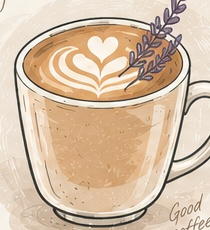
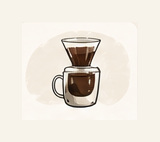
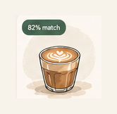
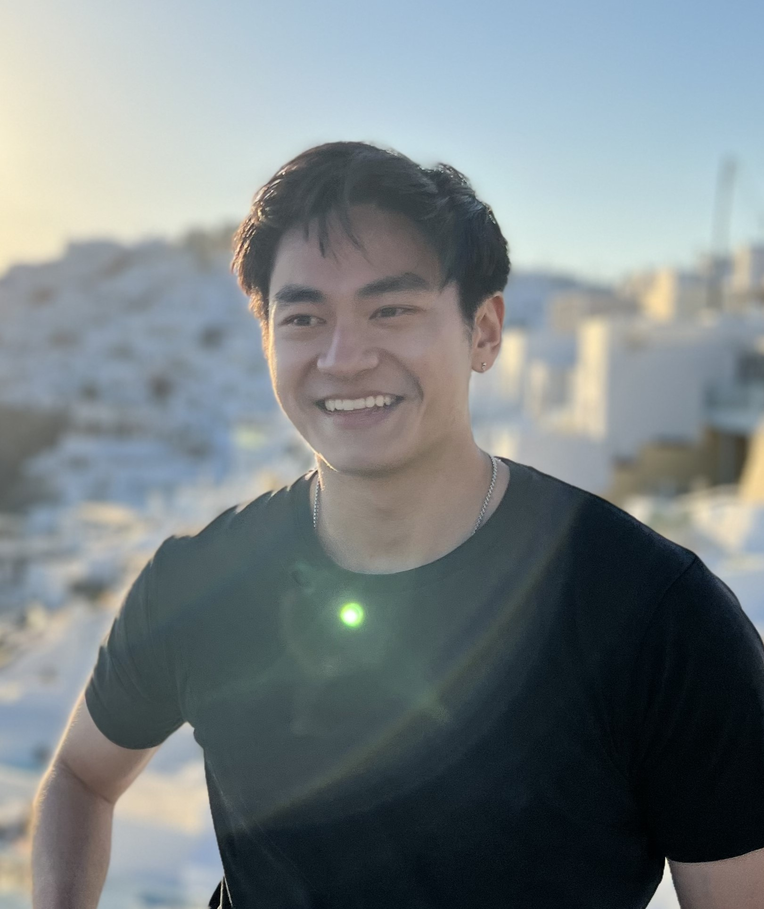

This is an AI-powered coffee discovery experience that learns from what you drink, what you rate, and what you say — then uses those signals to recommend what you might enjoy next.
Generic ratings tell you what everyone likes. Specialty coffee tools often assume you already know exactly what you want. The app takes a different approach: you drink coffee, tell it what you thought, and it learns.
Get a café drink matched to your history and what you’re in the mood for right now.
Explore beans and home-brew ideas informed by the flavors and methods you’ve enjoyed.
Discover cafés whose drinks fit your preferences — or ask for a surprise.
Ratings, written notes, drink history, and recommendation feedback become signals that gradually build a more useful picture of what you enjoy. Recommendations are flexible: reject one, explain why, change your current mood, or deliberately venture outside your comfort zone.

DrinkLog what you tried
LearnBuild your taste profile
DiscoverGet a better matchI’m a product manager and builder who loves turning ambiguous ideas into products people actually use.
I’ve spent my career launching 0→1 products, scaling experiences to hundreds of thousands of users, and solving customer problems across a wide range of industries and user groups. My work spans product strategy, customer research, rapid prototyping, experimentation, AI-powered experiences, and taking products from an early idea through launch and iteration.
I’m particularly interested in how AI and personalization can make products more useful without making them more complicated. I enjoy getting close to the problem, building something quickly, putting it in front of users, and using what I learn to make the next version better.

I started with a simple question:
“Could your coffee history help predict what you’ll enjoy next?”
That became Excellatte. I defined the problem, researched the market, scoped an MVP, designed the recommendation experience, prototyped interactions, incorporated feedback, and repeatedly refined the product.
Try the app using a sample coffee profile and see how recommendations adapt to your choices.